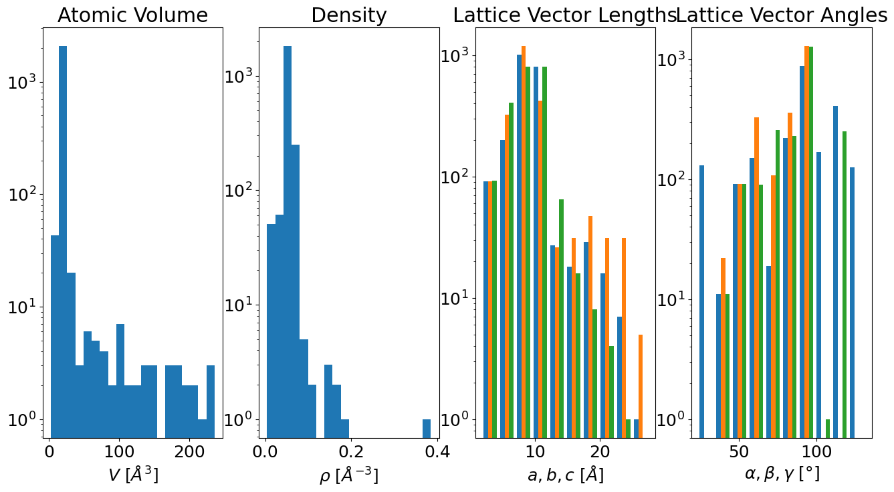

Visualizing Training Data #
You’ll need to run the Unpack.ipynb notebook before this one!
Setup#
from pyiron import Project
import matplotlib.pyplot as plt
import numpy as np
import seaborn as sns
/srv/conda/envs/notebook/lib/python3.8/site-packages/pkg_resources/__init__.py:123: PkgResourcesDeprecationWarning: NOT-A-GIT-REPOSITORY is an invalid version and will not be supported in a future release
warnings.warn(
plt.rc('figure', figsize=(16,8))
plt.rc('font', size=18)
pr = Project('.')
if len(pr.create_group('training').list_nodes()) == 0:
pr.unpack('training_export')
pr = Project('training')
Loading Container#
container = pr.load('basic')
Some Predefined Plots#
Cell Information#
container.plot.cell();

E-V Curves#
container.plot.energy_volume();
Cell Symmetries#
container.plot.spacegroups();
Custom Plots from Data#
df = container.to_pandas()
E-V by Concentration#
df['concentration'] = df.atoms.map(lambda s: (s.get_chemical_symbols()=='Li').mean())
df['energy_atom'] = (df.energy / df.number_of_atoms)
df['volume_atom'] = df.atoms.map(lambda s: s.get_volume(per_atom=True))
sns.scatterplot(
data=df,
x='volume_atom',
y='energy_atom',
hue='concentration'
)
plt.xlabel(r'Atomic Volume [$\mathrm{\AA}^3$/atom')
plt.ylabel(r'Atomic Energy [eV/atom]')
plt.legend(title='Li')
<matplotlib.legend.Legend at 0x7fca7416e340>
Convex Hull#
First find the equilibrium energy at the terminal concentrations.
e_min_al = df.query('concentration == 0').energy_atom.min()
e_min_li = df.query('concentration == 1').energy_atom.min()
print(e_min_al, e_min_li)
-3.4827513025 -1.757035875
Next calculate the deviation to the “ideal” mixing enthalpy
\[
e(c_\mathrm{Li}) = e_\mathrm{Al} + c_\mathrm{Li} (e_\mathrm{Li} - e_\mathrm{Al})
\]
and call that the energy excess, where \(e\) are the per atom equilibrium energies of the pure phases.
df['energy_atom_excess'] = df.energy_atom - df.concentration * (e_min_li - e_min_al) - e_min_al
sns.lineplot(data=df,
marker='o',
x='concentration', y='energy_atom_excess',
estimator=np.min)
plt.scatter(df.concentration, df.energy_atom_excess, marker='.')
plt.ylim(df.energy_atom_excess.min() * 1.2, .4)
plt.xlabel('Li concentration')
plt.ylabel('Excess Energy [eV/atom]')
Text(0, 0.5, 'Excess Energy [eV/atom]')
Extra Credit#
Plot the energy against smallest nearest neighbor distance in a structure. You can get the neighbor information with the get_neighbor method on a structure.